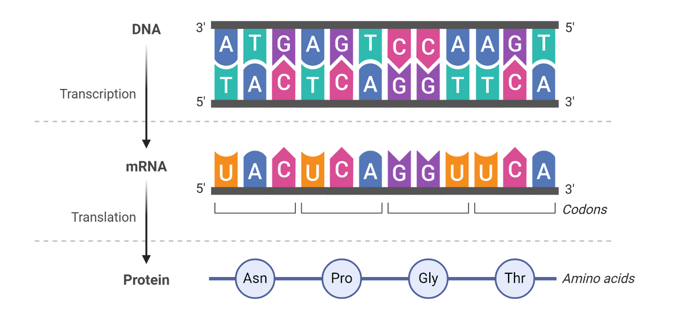
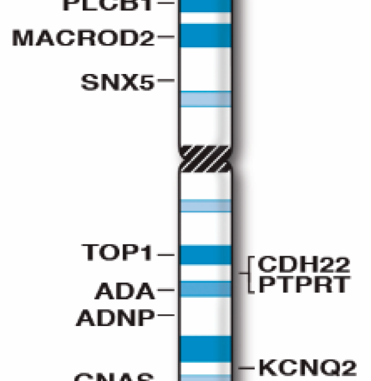

Knowledgebase
The basics
What is a gene?
Genes are small sections of DNA within the genome that code for proteins. They contain the instructions for our individual characteristics – like eye and hair colour.
A gene is a small section of DNA that contains the instructions for a specific molecule, usually (but not exclusively) a protein. The purpose of genes is to store information. Each gene contains the information required to build specific proteins needed in a human.
Genes come in different forms, called alleles. In humans, alleles of particular genes come in pairs, one on each chromosome (we have 23 pairs of chromosomes). If the alleles of a particular gene are the same, the organism is described as homozygous for that gene. If they are different the organism is described as heterozygous for that gene.
An individuals phenotype is determined by the combination of alleles they have. For example, for a gene that determines eye colour there may be several different alleles. One allele may result in blue eyes, while another might result in brown eyes. The final colour of the individual’s eyes will depend on which alleles they have and how they interact.
The characteristic associated with a certain allele can sometimes be dominant or recessive.


What is a genome?
A genome is an organism’s complete set of genetic instructions. Each genome contains all of the information needed to build that organism and allow it to grow and develop.
A genome is an organism’s complete set of genetic instructions. The instructions in our genome are made up of DNA. This code is determined by the order of the four nucleotide bases that make up DNA, adenine, cytosine, guanine and thymine, A, C, G and T for short. DNA has a twisted structure in the shape of a double helix. Single strands of DNA are coiled up into structures called chromosomes.
Genomics is the study of genomes. Genomics looks at the DNA code packaged within the chromosomes found in the nucleus of a plant or animal’s cell.
The human genome contains 20,687 protein-coding genes. The human genome is made of 3.2 billion bases of DNA but other organisms have different genome sizes.
Genetics and Cambridge
Genetics began in Cambridge, much of the material you will be taught has its beginnings at the university and surrounding institutes.
We will start with a Cambridge perspective, that may help you understand where some of the ideas mentioned above first arose, and where some of the key terms we use first came from.
Most talks on genetics begin with Mendel and his pea plants, experiments that took place in the mid 1800s. We are going to fast forward to the start of the 20th Century, and pick up the story here in Cambridge at Newnham College.
Between 1900-1910 William Bateson directed a rather informal school of genetics, mostly of the women associated at Newnham College, who could not yet study for degrees. Unaware of the work Mendel had performed, Bateson has been working hard on understanding the basis for variation, even coining the phrase homeotic mutation to describe the effect of one body part being replaced with another. This term will become familiar to you if you have encountered the Hox gene family. When Gregor Mendel’s two part research paper was re-read in 1900 Bateson became the chief populariser of the ideas and termed Mendel’s observations Mendelian laws. At this point the concept of chromosomes and inheritance were still separate.
In 1906 Bateson coined the phrase genetics, and our discipline was born. Many of you will be aware of the “punnet square” which identifies the inheritance pattern for dominant and recessive characteristics. This was co-developed by Bateson and his student Reginald Punnet, they performed all of their experiments, with the Newnham college Mendelians, to confirm Mendel's work with pea plants. Chief amongst the Newnham women was Muriel Wheldale Onslow who joined William Bateson's genetics group at Cambridge in 1903.
Out of their work came the terms that we rely on today such as genetics, genotype, phenotype, gene, epistasis and many others that will be explained throughout this programme.
They performed this work at the Balfour laboratory in central Cambridge, using species that they could easily follow traits in such as snapdragon flowers, pea plants, chickens and rabbits. Most genetics text books use these original examples to illustrate the basic principles of inheritance involved.
In the fundamentals of genetics primer we are going to start by looking at the simple rules of inheritance, and how they relate to chromosomes.
It should be noted that although we refer to these as Mendel’s laws, and Mendelian genetics, these rules were described by Bateson and others to explain Mendel's observations. Mendel did not use the term gene or allele.
The laws of Mendelian genetics are:
Dominance: Some alleles are dominant while others are recessive; an organism with at least one dominant allele will display the effect of the dominant allele.
Segregation: The alleles for each gene segregate from each other so that each gamete carries only one allele for each gene
Independent assortment: Genes of different traits can segregate independently during the formation of gametes

Fundamentals of genetics
The Cambridge Genomic Medicine Programme takes students from a range of backgrounds and prior educational experiences. The first module covers the fundamentals of genetics explained here, but this primer may aid some students in preparing for the course.
The terms used so far may not be that familiar to begin with, but by the end of the primer you should understand why they are used. A glossary of key definitions can be found at the end. We are going to start with an overview looking at our current knowledge of the structure of the human genome and how we access that information. Then we’ll go back and see how we know some of these basic details, go over the nomenclature for how and where genes are located on chromosomes and finally look at a chromosome together using genomic tools. Definitions are provided at the end for key terms in bold.
The unit of life
Cells are the building blocks of life, each cell of the human body contains a copy of the human genome in the cells nucleus
All life revolves around the concept of the cell. It is the smallest unit of life, with each cell containing all of the necessary information to grow, survive and replicate itself. This principle is conserved from the smallest bacteria such as E.coli to single celled eukaryotes and large multi-cellular eukaryotes such as humans like us. Our bodies are made up of millions of cells (100,000,000,000,000), each with their own complete set of instructions for making us. This set of instructions is known as our genome and is made up of DNA. Each cell in the body, for example, a skin cell or a liver cell, contains this same set of instructions (there is always an exception - red blood cells lose the nucleus containing DNA as they develop).


Tell me about chromosomes
Chromosomes are linear pieces of DNA. The name means coloured body.
We've just been introduced to chromosomes, but how do we know about them? In 1842 structures were discovered in cells that would later became known as chromosomes. Chromosome literally means “coloured body” in Greek.
Khroma (colour) soma (body)
The term chromosome was used to describe structures that formed during the process of cell division. How were they seen? Well remember the name means coloured body. The use of stains to visualise chromosomes was integral to identifying the location of genes in the pre-genomic era as we will soon discuss.
If we take a look at a genome browser, such as Ensembl, you will see the human chromosomes displayed as in the image to the left. The characteristic banding pattern is a result of the staining.
The human karyotype
Humans have 22 pairs of autosomal chromosomes and 2 sex chromosomes, giving 46 chromosomes in total.
This image shows the human karyotype. What does that mean? Karyotype refers to the number and appearance of chromosomes as they appear in the nucleus (Karyon is the Greek word for nucleus). Human DNA is contained on linear chromosomes. Humans have 22 autosomal chromosomes and 2 sex chromosomes. In somatic tissue we have two copies of each autosome, one inherited from each parent, giving us a complement of 46 chromosomes in total.
The chromosomes are named originally based on their size. The table we just looked at on ensembl shows their size in terms of DNA base pairs (bp). The only discrepancy is chromosome 21 which we can see now is slightly smaller than chromosome 22.


Viewing chromosomes
This is the human chromosome complement as viewed with a scanning electron micrograph. Perhaps you can see in this image that there are a lot more chromosomes than in the previous one. This is because this image is taken during cell division, during metaphase, when the chromosomes are condensed. This means that they can actually be seen cytogenetically. At this point the chromosomes have been replicated, so you see twice as much genetic material. The replicated chromosomes are connected, and referred to as sister chromatids. This might seem confusing, so let’s recap, and hopefully this will become clearer as we go on.
Normally we have two copies of each chromosome, one from mum and one from dad, in the somatic tissues (23 pairs - 2N).
If we look at the chromosomes on a genome browser such as Ensembl or NCBI we will see the haploid complement, what we might expect to find in a gamete (23 chromosomes - N).
Conversely, if we see an actual karyotype image of all of the chromosomes, we will see them condensed in a replicated state where the original and replicated chromosome are connected to one another as they are visualised during cell division (92 chromosomes - 4N).
Where are genes on chromosomes?
Geneticists have traditionally used a standardised way of describing a gene's cytogenetic location. In most cases, the location describes the position of a particular band on a stained chromosome. For example, 1q12. The combination of numbers and letters provided a gene's “address” on a chromosome. This address is made up of several parts:
i) The chromosome on which the gene can be found.
ii)The arm of the chromosome. Each chromosome is divided into two sections (arms) based on the location of a narrowing (constriction) called the centromere. By convention, the shorter arm is called p, and the longer arm is called q. p stands for petit in French.
iii) The position of the gene on the p or q arm.
So to recap the location of a gene using cytogenetic nomenclature:
1 q 12
The chromosome on which the gene is found
The arm of the chromosome (p=short, q=long)
The position of the gene on the p or q arm
The position of a gene on the p or q arm is based on a distinctive pattern of light and dark bands that appear when the chromosome is stained in a certain way. What is the stain that gives us our coloured body? Giemsa stain.


The structure of chromosomes
Let’s overview the key components of a chromosome that we will make reference to.
A chromosome is composed of a long arm and a short arm, as we have just seen, which are divided by a structure called the centromere, which contains repetitive DNA. At the ends of chromosomes, specialized structures - Telomeres - maintain the integrity of chromosomes. DNA is packaged with proteins into chromatin. Chromatin consists of DNA packaged around nucleosomes, structures made of an octamer of histone proteins consisting of two copies each of: H2A, H2B, H3 and H4 separated by linker histones H1. You may have heard this referred to as beads on a string. Each nucleosome has 146 bp of DNA wrapped around it. Regions which have dense nucleosome occupation is called heterochromatin whereas genes are found in less tightly packaged Euchromatin.
Discovering chromosome 1...
Now we know the basic anatomy of a chromosome let us look at an example chromosome to get an idea about the location of genetic information. In the figure to the right you can see chromosome 1. This chromosome is 248 Mbp long, and contains 2058 genes that code for proteins. It accounts for 7.9% of the whole genome. If the DNA were to be completely unravelled it would stretch 85 mm long!
You can see on the left the old banding pattern used to refer to a genes location. Although it is still valid to refer to a genes location as 1q12, we would now want to use the genes genomic co-ordinates. E.g. 1:13131313. On chromosome 1 you can see that there is an unequal distribution of the protein-coding genes along the chromosome (in red).
On chromosome 1 the centromere is located at position 125Mbp. You can see on this map that there are no genes located at the centromere. In fact you can see two regions on each arm which seem to be enriched for protein coding genes. The ends of the chromosomes just below the telomeres and just before the centromere, so either end of each arm. When you compare this with the banding pattern you can see that the dark staining G bands are associated with a lower number of protein coding genes.
So that is a brief overview of how we find our way around a chromosome and what we might expect to find there. Next we'll take a look at a chromosome for ourselves.

Discover the genome for yourself
How do we look at a genome?
To view information on a chromosome in a genomic context we use a genome browser.
To look at a chromosome we can make use of a tool called a genome browser. There are many different browsers available. During the programme you will make use of Ensembl. For this primer we are going to use a simple but powerful genome browser called the Integrative Genomics Viewer (IGV). We can view many things on a genome browser, the position of genetic variation, the location of genes, exons, introns, in fact anything we can provide co-ordinates for.

To get us used to the idea of genome browsers let's first begin by using a genome browser to find a gene. IGV is the simple genome browser that we are going to use. You will need to complete this activity on a computer, rather than a mobile device. Below we have a working version of IGV. Have a go at pressing a few of the buttons - don't worry about what you do here, we'll carry on in a new version of IGV in the section below.
Now let's use IGV to select a chromosome. The IGV browser below is pre-loaded with chromosome 1. Try changing the chromosome using the first drop down menu.
Now we are ready to use our browser to look at a gene. Let's look at a random gene on chromosome 1. The box below has been preloaded by typing the gene name "UBR4" into the co-ordinates search bar, and it has returned to us the co-ordinate location of UBR4 on chromosome 1. We can see the gene name UBR4 displayed on the IGV track.
Now over to you! A blank version of IGV is provided below, try to use it to navigate to the famous BRCA2 gene on chromosome 13.
In the first module you are going to learn all about variation and how to look at it. For now we are going to satisfy ourselves with the explanation on alleles we had above. People have different flavours of genes, caused by slight differences in the A's, C's, G's and T's that make up the genes information. We can view this on a genome browser too, by adding an additional line, or track, containing this information. The IGV instance below has been preloaded with some differences in the gene. These are called variants, and you will learn all about them in module 1. Navigate to the BRCA2 gene again and see if you can view some of these variants. You will need to zoom in using the plus button to see the bases.
Well done, you have successfully navigated the genome for the first time! We look forward to meeting you during your time on the programme.
Glossary
Centromere
The region of the chromosome bound by spindles during cell division, and holding sister chromatids together. Usually few genes are found here. DNA is usually highly repetitive in this region.
Chromatid
One of the copies of a chromosome present after DNA and chromosome replication.
Chromosome
A structure composed of DNA and bound proteins which carries the genetic information. Humans have 23 pairs of chromosomes.
Euchromatin
Active chromatin that can be actively transcribed
Geimsa stain
It was discovered early in the 20th century that chromosomes stain with Giemsa stain, named after German chemist and bacteriologist Gustav Giemsa, is used in cytogenetics. Giemsa stain is used in Giemsa banding, commonly called G-banding, to stain chromosomes and often used to create a karyogram (chromosome map). It can identify chromosomal aberrations such as translocations and rearrangements. Banding can be used to identify chromosomal abnormalities, such as translocations, because there is a unique pattern of light and dark bands for each chromosome. The less condensed the chromosomes are, the more bands appear when G-banding. This means that the different chromosomes are more distinct in prophase than they are in metaphase. Genes are historically labelled as g-pos and g-negative. Giemsa's solution is a mixture of methylene blue, eosin, and Azure B. The stain is usually prepared from commercially available Giemsa powder.
A thin film of the specimen on a microscope slide is fixed in pure methanol for 30 seconds, by immersing it or by putting a few drops of methanol on the slide. The slide is immersed in a freshly prepared 5% Giemsa stain solution for 20–30 minutes (in emergencies 5–10 minutes in 10% solution can be used), then flushed with tap water and left to dry.
Genome
The complete set of genes carried by an organism or the total DNA content
Genome browser
A bioinformatics tool that can be used to find and view a wide range of information and annotation on sequenced genomes e.g. IGV
Genotype
The particular pair of alleles present in a person for any given gene
Gene
The basic unit of inheritance, by which characteristics are heritably transmitted from parent to child. At a molecular level a single gene is a piece of DNA, which affects the organism by encoding a protein or RNA.
Heterochromatin
Chromatin that is not actively transcribed, generally characterised by certain modifications to histone proteins and DNA (see the epigenetics module).
Linkage
When a set of alleles of different genes from one of the parents are inherited together, in opposition to Mendel's law of independent assortment, usually due to proximity on the chromosome.
Linkage disequilibrium
When certain alleles at two linked positions are non-randomly found together. This is either due to close physical proximity or because the positions are under some form of selection.
Phenotype
The visible or measurable characteristics of a person, resulting from the interaction of genotype and environment
Mendelian genetics / laws
Laws first proposed based on observations by Gregor Mendel in the 19th Century, that describe basic rules of inheritance.
Telomere
A highly repetitive region of DNA at the end of the chromosome.
Preserved from https://www.genomics.cam/knowledgebase on 10 September 2026. Linked external services may require internet access. The original source snapshot is included with the migration files.